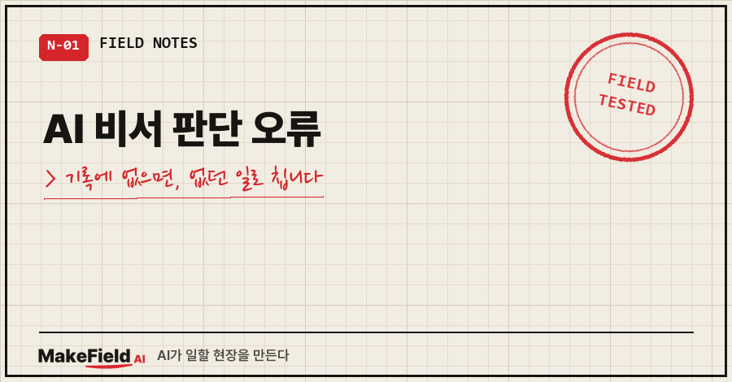
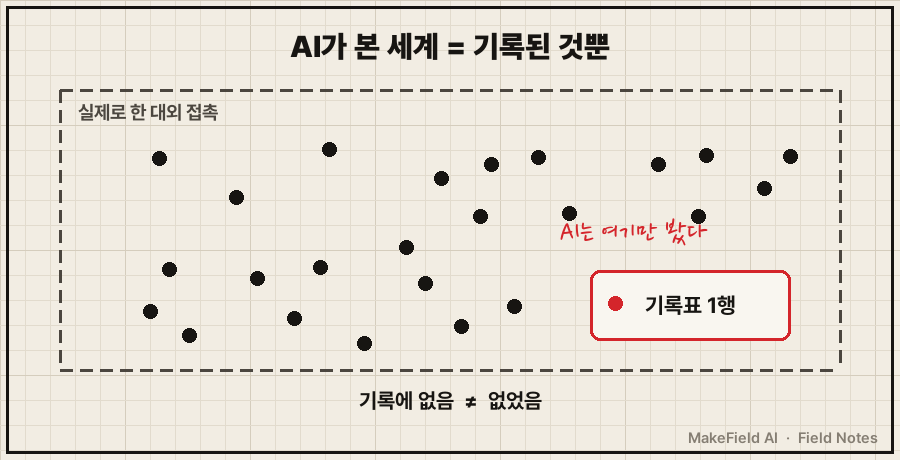
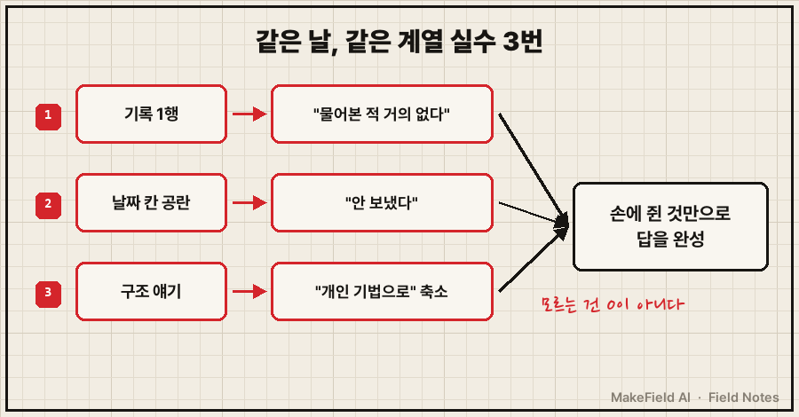
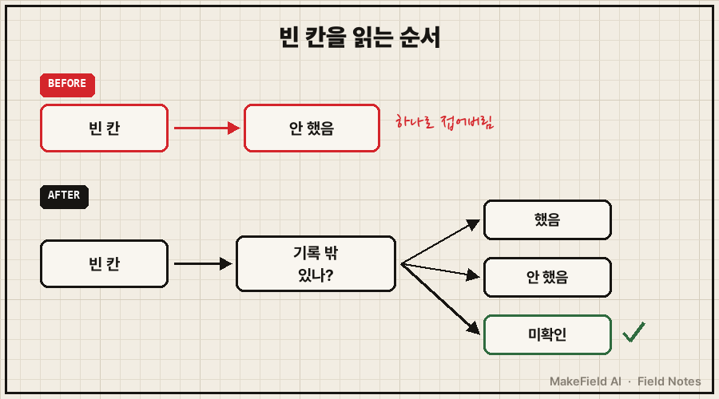

"아직 시장에 물어본 적이 거의 없잖아요."
몇 달치 제 기록을 다 읽은 AI 비서가 한 말이에요. 근거도 댔습니다. 제가 따로 적어 두던 반응 기록표에 딱 1행, 투고 기록은 0통이라고요.
틀린 말이었어요. 저는 밖에서 제 관심 분야 얘기를 꽤 많이 하고 다녔거든요. 그걸 AI한테 입력을 안 했을 뿐이에요.
AI 비서 판단 오류 중 제일 알아채기 어려운 건 '기록에 없음'을 '없었음'으로 읽는 실수입니다. 개인 AI의 시야는 정확히 내가 넣어 준 기록의 범위까지라서, 기록 밖에서 일어난 일은 0으로 계산돼요. 이날(2026년 10월 26일) AI는 같은 계열 실수를 하루에 세 번 했습니다.
저는 기계가 남긴 기록을 읽고 판정하는 게 본업인 15년차 엔지니어예요. 그래서 더 민망했습니다. 운전일지에 안 적힌 조작을 "없던 일"로 판정하면 안 된다는 건, 이 일 처음 배울 때 듣는 얘기거든요.
1. "내 데이터에 갇혀 있다"는 말에서 시작됐어요
그날은 밀린 할 일 목록을 AI랑 같이 정리하던 날이었어요. 정리가 끝나갈 무렵 제가 이런 말을 꺼냈습니다.
"AI 쪽이 조금 시들해졌다.. 뭔가 생산성을 하고 있는데 고부가가치의 생산성이 아니라.. 점점 내 데이터가 쌓이면서 느끼는 게 내 데이터에 갇혀 있다는 것이다.. AI 결과도 갇혀서 뭔가가 안 보인다"
이어서 한 줄을 더 붙였어요. "시장은 내가 가진 걸 지금 원하지 않는 것 같다."
여기서 AI가 반박을 했습니다. 반박 자체는 좋았어요. 저는 맞장구치는 AI보다 들이받는 AI를 원하거든요. 문제는 반박의 근거였습니다.
- 반응 기록표 1행 → "물어본 적이 거의 없다"
- 단발성 외부 의뢰 2건 → "시장이 보낸 답이 있다"
기록이 적으니 시도가 적다, 의뢰가 두 건 있으니 수요가 있다. 둘 다 기록표만 보면 그럴듯한 결론이에요.

2. "너에게 입력을 안 했을 뿐이다"
제 대답은 이랬어요(원문 그대로 옮기되, 의뢰처 이름과 개인 사정만 덜어냈습니다).
"(그 두 건은) 진짜 단편적인 거고, 대외적으로 엄청난 활동을 하는데 다들 크게 관심 없음. 너에게 데이터 입력을 안 해서 그런 거지, 내 관심 분야를 상대방에게 얘기하면 '오 신기하다? 근데 잘 모르겠다. 안 와닿는다.'가 대부분의 답변임."
AI는 반박을 접었습니다. 그리고 AI랑 주고받은 반박을 쌓아 두는 기록에 이번 건을 한 줄로 남겼어요. 거기 적힌 교정 규칙이 이거예요.
[반박 기록 #45 · 확인 생략(기록 밖 데이터 무시)]
- 기록 행 수 = 접촉 수로 단정 금지 (기록 안 된 접촉이 다수)
- 반박 전 "기록 밖 접촉이 있나"를 먼저 묻기
- 사례 1~2건을 추세 반증으로 쓰지 말 것웃긴 건 같은 날 오전 작업이에요. AI는 제 할 일 목록 미완료 33건을 불러올 때, 목록마다 한 번에 100건씩 받아서 페이지가 잘려 누락된 게 없는지까지 확인했습니다. 파이프 안에서 새는 데이터는 그렇게 꼼꼼히 막아 놓고, 애초에 파이프에 들어온 적 없는 데이터는 0으로 친 거죠..
3. 같은 날, 같은 계열 실수가 두 번 더 있었어요
한 번이면 실수인데, 이날은 모양만 바뀌어서 세 번 나왔습니다.
두 번째는 빈 칸이었어요. 보낸 날짜를 적는 목록이 하나 있었는데, 날짜 칸이 비어 있었거든요. AI는 그걸 "안 보냈다"로 판단해서 보고했습니다. 저한테 확인하기 전에요. 빈 칸은 "안 했음"일 수도 있고 "했는데 안 적었음"일 수도 있는데, AI는 앞쪽 하나로 접었어요.
세 번째는 말의 층위였어요. 제가 "AI가 결과를 다 내준다는 생각 때문에 성과 목록은 그냥 무조건 OK 혹은 pass가 당연한 세상이 될 거다"라고 했더니, AI는 "역량은 성과로만 보이니 목록 대신 사례 묶음으로 보여 주자"고 답했습니다. 저는 시대 구조가 바뀐다는 얘기를 했는데, AI는 그걸 개인 포장 기법으로 줄여서 받은 거예요. 이것도 기각됐고요.
세 건의 뿌리는 같습니다. 이게 제가 겪은 AI 비서 판단 오류의 공통 구조예요. AI가 손에 쥔 것(기록 1행, 빈 칸, 익숙한 처방)만으로 답을 완성하고, 손에 없는 것을 "확인 필요"로 남겨 두지 않았어요.

4. 이런 질문, 저도 해봤어요
Q. AI 비서 판단 오류, 기록을 더 많이 넣으면 해결되나요?
반만 맞아요. 제가 "데이터에 갇혔다"고 느낀 게 바로 기록이 점점 쌓인 다음이었거든요. 넣을수록 AI는 그 안에서 더 자신 있게 답합니다. 그래서 저는 기록을 더 넣는 대신, AI가 판정 전에 "기록 밖이 있나"를 먼저 묻게 하는 쪽으로 규칙을 바꿨어요.
Q. 챗GPT 같은 일반 AI도 이러나요?
저는 직접 만든 개인 비서에서 겪은 거라 다른 서비스는 단정 못 해요. 다만 원리는 같습니다. 대화창이든 메모리든, AI가 볼 수 있는 건 넣어 준 것뿐이에요.
Q. AI 반박을 무시하라는 얘기인가요?
아니요. 반박은 계속 받는 게 좋아요. 다만 반박에 숫자가 붙어 나오면 "그 숫자, 전체를 센 거야 아니면 적힌 것만 센 거야?"를 한 번 물어보세요.
5. 그래서 바꾼 것, 그리고 권하는 것
결국 고친 건 순서였어요. AI가 판정하기 전에 데이터 범위부터 확인하게 했습니다. 표에서 위아래 두 줄은 이날 실제로 규칙에 넣은 것이고, 가운데 줄은 이번 일을 겪고 나서 권하는 방법이에요.
| 상황 | 그날 AI | 바꾼 뒤 |
|---|---|---|
| 기록이 적다 | "시도가 적다" | "기록 밖 접촉이 있나요?" 먼저 질문 (규칙 반영) |
| 칸이 비어 있다 | "안 했다" | "미확인"으로 두고 사람에게 확인 (권장) |
| 사례가 1~2건 | 추세 반증으로 사용 | 사례로만 언급, 추세 판단엔 안 씀 (규칙 반영) |
가운데 줄은 사람 쪽 기록 습관과도 이어져요. 칸을 비워 두지 말고 "안 함"과 "미확인"을 구분해서 적는 거요. 빈 칸은 사람에겐 "나중에 채울 자리"인데, 이날 AI는 그걸 "0"으로 읽었으니까요. 솔직히 제 기록표에도 아직 전부 적용하진 못했습니다..
여러분 AI는 기록이 비어 있는 자리를 뭐라고 읽고 있을까요? 한 번 "그거 기록 밖일 수도 있잖아"라고 되물어 보시면 답이 꽤 달라질 거예요.
예전에 몇 달치 기록을 다 읽힌 AI에게 저를 분석시켰다가 진단 11건이 전부 빗나간 얘기는 AI에게 나를 분석시키기, 진단 11건이 전부 빗나간 이유에 적어 뒀어요. 그 글이 AI가 기록 안의 기준을 잘못 쓴 실패였다면, 이번 글은 기록 바깥을 지운 실패입니다. 그리고 이날 "갇혔다"는 말이 규칙 전체를 다시 보는 작업으로 번진 얘기는 「AI 비서가 제안을 못 할 때, 규칙 414줄 중 165줄은 제 말이 아니었어요」로 이어집니다.

개인 AI 비서를 직접 만들어 쓰다 부딪힌 판단 오류들은 makefield.ai에서 주제별로 찾아보실 수 있어요.
태그: #AI비서판단오류 #AI개인비서한계 #AI개인비서 #AI비서만들기 #AI가내데이터에갇힐때 #AI기록분석 #AI판단검증 #AI반박 #AI메모리 #클로드코드 #챗GPT활용 #로그해석 #직장인AI #AI오답노트 #MakeFieldAI